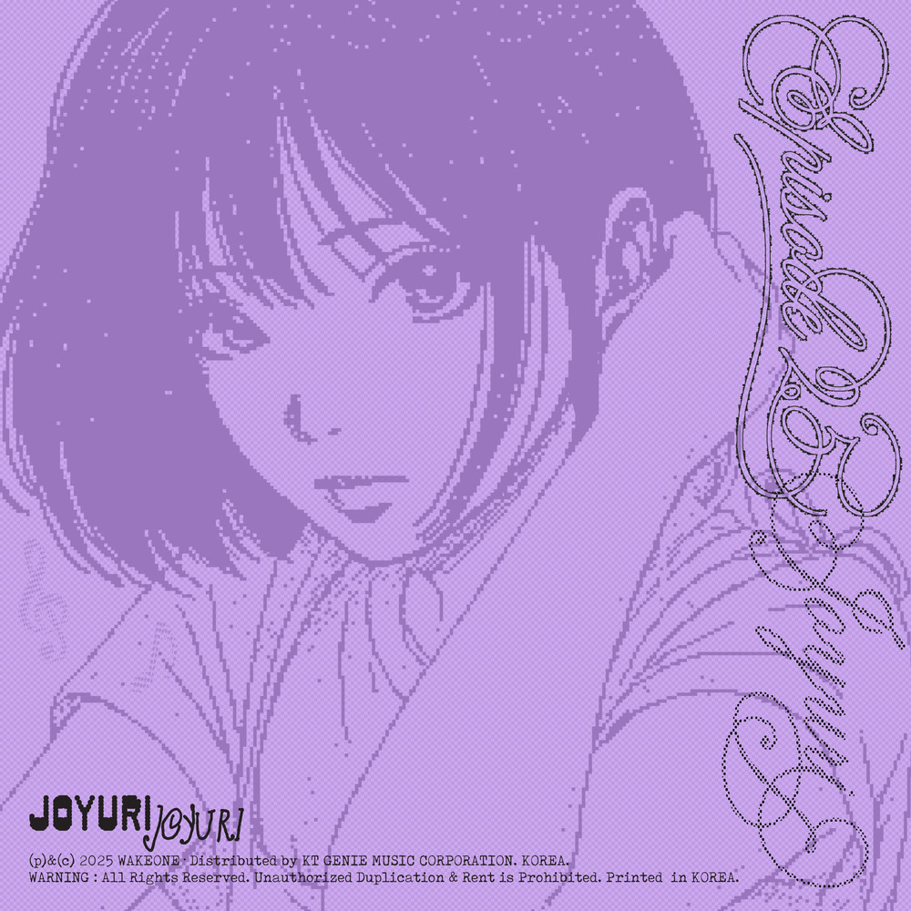

안녕하세요, 라보엠입니다.
오늘은 조유리의 미니 3집 타이틀곡 ‘이제 안녕’을 소개해드리겠습니다. 얼마전 넷플릭스 오징어게임이 시즌3에서 조유리는 임산부 준희 역할로 출연하여 색다른 모습을 보여줬습니다. 사실 저는 조유리가 가수인줄 몰랐습니다. 오늘 추천음악으로 뜬 이름을 보고 같은 사람 아니겠지 했는데, 이번 뮤비를 보고 그 조유리가 가수인걸 알게되었네요. 아이즈원 메인보컬 출신이자 솔로 가수로 활약하며 이번 미니 EP 3집을 낸 조유리는 이번 곡에서 자신의 음악적 색깔을 한층 더 확장해 보여줍니다. 여름의 한복판, 청량한 바람과 함께 다가오는 이별의 순간. 이 노래는 그 찬란하면서도 아릿한 계절의 한 조각을 섬세하게 담아냈습니다.

조유리 이제 안녕 - 새로운 시작에 담긴 청춘의 하루
‘이제 안녕’은 팝록 계열의 신나는 리듬 위에 조유리 특유의 맑고 힘 있는 보컬이 시원하게 펼쳐집니다. 기존의 감미로운 발라드에서 벗어나, 경쾌한 밴드 사운드와 청량한 신스, 감각적인 기타가 어우러져 여름의 밝고 씁쓸한 분위기를 완성합니다. 이번 앨범은 스물다섯을 맞이한 조유리가 직접 작사에 참여하며, 지난 사랑의 끝과 새로운 시작의 순간을 한 편의 에세이처럼 노래합니다. “이제 안녕”이라는 단호한 인사가 쓸쓸함을 머금으면서도 묵직한 위로가 되어 다가옵니다.
뮤직비디오에서는 파도, 해변, 햇빛 아래 춤추는 모습, 그리고 저물어 가는 해가 차례로 등장하며, 사랑했던 사람과 보냈던 시간·공간의 아련한 잔상이 선명하게 그려집니다. 마지막엔 홀로 남아 하늘을 바라보는 한 장면이 오래도록 마음에 남습니다. 이별을 담고 있지만 조유리의 상큼한 청춘의 얼굴은 노래가 끝나도 싱그럽게 남아 있습니다.
이 노래의 가장 큰 매력은 조유리 보컬의 변주와 감정선에 있습니다. 담백하면서도 호소력이 강한 음색, 그리고 후반부로 갈수록 퍼지는 폭발적인 고음은 듣는 이의 마음 깊숙이 잔잔한 파문을 남깁니다. 밴드 사운드의 탄탄한 베이스라인, 경쾌한 드럼, 설렘 가득한 신스와 섬세한 스트링이 조화를 이루며, 여름 오후의 햇살 같은 밝은 분위기와 이면의 쓸쓸함이 공존합니다.
조유리 '이제 안녕' - 가사에 담긴 찬란한 기억과 이별의 순간
한 입도 못 마신 얼음이 다 녹은 아이스티
애꿎은 컵만 바라보는 나
대화 속에 섞인 한숨
이어가려 해도 끊기는 대환
언제부터던가
잡은 손을 놓아주는 것
어쩌면 이건 사랑의 다른 말
조금 더 머물러줘
그런 얘긴 의미 없잖아
너의 두 눈 속에 날
찾을 수 없다는 걸 알아
그림자 멀어져 가는 네 그림자
남은 건 빛바래진 마음뿐이야
의미 없대도 다 끝이라 해도
파도처럼 아름답던
지난날의 우린
이제 안녕!
잡은 손을 놓아주는 것
어쩌면 이건 사랑의 다른 말
나를 따라 어느새
좋아져 버렸단 여름에
함께였던 계절에
홀로 서서 그대를 찾아
그림자 멀어져 가는 네 그림자
남은 건 빛바래진 마음뿐이야
의미 없대도 다 끝이라 해도
파도처럼 아름답던
지난날의 우린
이제 안녕!
벌써 멀리 와버린 듯해 oh
닳아버린 마음을 꼭 잡고 있어
그런 모습까지 알아줬음 해
긴 하루의 끝
저무는 우리
Oh I’m still right here
그림자 멀어져 가는 네 그림자
남은 건 빛바래진 마음뿐이야
네 맘속에 떠나지 않을
우리를 남겨둬
그거면 충분해
너와 나 한편의 잘못된 영화 속
너없는 엔딩만이 남은 화면만
의미 없대도 다 끝이라 해도
파도처럼 아름답던
지난날의 우린
이제 안녕!
이 곡의 가사는 사랑이 머물렀던 계절과 공간, 그리고 헤어짐을 받아들이는 과정을 섬세히 그려냅니다.
- “아이스티가 다 녹았던 여름 끝자락, 텅 빈 카페 창가에서 홀로 남아 인사를 건네”
- “파도처럼 스쳐간 우리 웃음소리, 그 순간은 푸르던 바다 위에 영영 남아”
- “We were beautiful once, like a wave in its glow. 안녕, 나의 계절아”
이처럼 세밀한 풍경 묘사와 감각적인 영어 가사가 교차하며, 한 청춘의 한 페이지가 조용히 넘어갑니다. 이제는 서로 각자의 길로 나아가야 함을 담담히 받아들이는 목소리에는, 단순한 슬픔이 아니라 성장의 의지가 녹아 있습니다.
‘이제 안녕’은 지나간 사랑에 오래 머물기보다는, 한 계절을 보내고 또 다른 계절을 맞이하는 청춘의 성장을 노래하고 있습니다. 지금 나에게 필요한 것은 후회의 눈물이 아니라, “고마웠어, 안녕”이라고 밝게 인사할 수 있는 용기라는 걸 곡 전반에 담아냈습니다. 아름다웠던 추억이 남아 있는 만큼, 앞으로의 내일도 분명 반짝이리라는 믿음이 담겨 있습니다.
맺음말
조유리의 ‘이제 안녕’은 한여름 오후, 머물렀던 사랑을 담담히 떠나보내는 성장의 노래입니다. 누구나 삶의 어느 순간엔 마지막 인사를 건넬 용기가 필요합니다. 이 곡은 찬란했던 순간들도, 아팠던 기억들도 모두 내 안에서 다시 빛날 수 있다는 위로와 응원의 메시지를 건넵니다. 오늘 하루, ‘이제 안녕’을 들으며 지난 사랑과 추억을 가만히 마주해보는 건 어떨까요? 이 노래가 여러분의 오늘에 시원한 바람과 밝은 새 출발을 선물해주길 바랍니다.